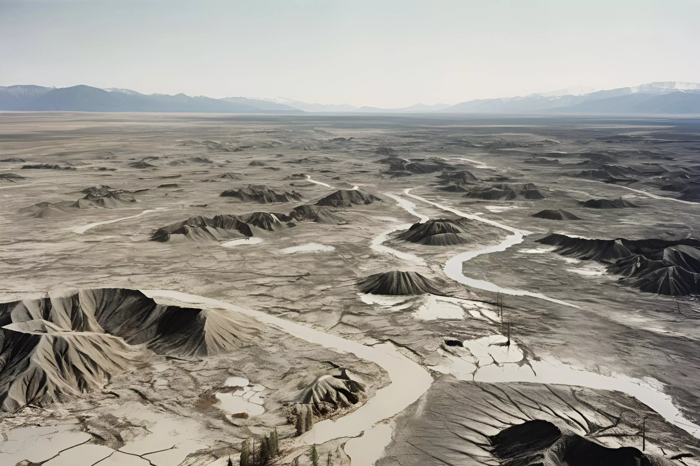

이서율은 22세기 지구온난화로 인해 급격히 변화한 환경에서 진화한 식물을 연구하는 식물학자이자
환경 진화 연구가이다. 그녀는 2096년 하버드 대학교 식물학을 전공했고, 2103년 옥스퍼드 대학교
환경생물학과에서 박사학위를 취득한 후, 현재 글로벌 기후적응 연구소에서 연구원으로 활동하고 있다.
그녀는 후박나무, 참식나무, 발풀고사리, 선인장 등이 극한의 기후 조건에서 어떻게 적응하고
진화했는지를 탐구하며, 이를 통해 인류의 기후 위기 대응 방안을 모색하고 있다. 특히 그녀가 발견한
선인장은 수명이 무려 500년으로 추정되고 있어 주목받고 있다. 항상 파란색 안경을 쓰고 다니는
이서율은 자연과 과학의 경계를 넘나드는 독창적인 연구로 유명하다. 그녀는 “식물은 지구의 미래를
구할 열쇠”라는 신념 아래, 끊임없이 새로운 발견을 위해 전 세계를 누비고 있다. 그녀의 연구는 기후
위기에 직면한 인류에게 희망을 주고 있다.
18세기 영국의 산업혁명 이후, 지구 생태계는 심각한 변화를 겪었다. 계속된 지구온난화로 지구
평균기온은 5.9도 이상 상승했고 폭염, 폭우 등 극단적 기상현상의 빈도와 강도가 증가했다.
또한 지구는 6차 대멸종을 겪으며 생물 다양성이 급격히 감소했다. 사막화와 토지 황폐화가
진행됨에 따라 일부 식물들은 멸종하고 다른 일부는 멸종 위기에 처했으며 몇몇 식물들이 새로운
환경에 적응해 생존하고 있다. 이 식물 도감은 22세기에 살아남은 육상식물 종에 대한 정보를 다룬다.
